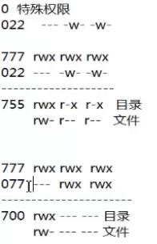

（更新中…上次更新于2018.11.25）
因为最近一直在做机器学习相关的实验，于是就想着开始学习Linux相关的知识啦~
我装的Linux发行版是ubantu的16.04.5，相关镜像可以到我所共享的资源链接中的开源镜像站里面去找。
我没有删掉原来的Windows，装的双系统，具体安装方法大家自行百度吧，如果后面有时间的话我也会写一份教程。
装这个的主要目的是想在Linux上做机器学习的开发，听说比Windows更方便哦~
文件处理命令
目录处理命令mkdir
- 命令名称：mkdir
- 英文原意： make directories
- 所在路径：/bin/mkdir
- 执行权限：所有用户
- 语法格式：mkdir -p [目录名]
- 功能描述：创建新目录，-p为递归创建
- 范例：
1
$ mkdir -p /tmp/China/Jiangsu/Suzhou
目录处理命令cp
- 命令名称：cp
- 英文原意： copy
- 所在路径：/bin/cp
- 执行权限：所有用户
- 语法格式：cp -rp [原文件或目录] [目标目录]
- 功能描述：复制文件或目录，其中-r 复制目录，-p 保留文件属性
目录处理命令mv
- 命令名称：mv
- 英文原意： move
- 所在路径：/bin/mv
- 执行权限：所有用户
- 语法格式：mv [原文件或目录] [目标目录]
- 功能描述：剪切目录、改名
目录处理命令rm
- 命令名称：rm
- 英文原意：re move
- 所在路径：/bin/rm
- 执行权限：所有用户
- 语法格式：mv -rf [原文件或目录]
- 功能描述：删除文件，其中-r为删除目录，-f为强制执行
文件处理命令touchu
- 命令名称：touchu
- 所在路径：/bin/touch
- 执行权限：所有用户
- 语法格式：touch [文件名]
- 功能描述：创建空文件
- 范例：
1
touch book.list
文件处理命令cat
- 命令名称：cat
- 所在路径：/bin/cat
- 执行权限：所有用户
- 语法格式：cat -n [文件名]
- 功能描述：显示文件内容，其中-n显示行号
- 范例：
1
2cat /etc/issue
cat -n /etc/services
文件处理命令tac
- 命令名称：tac
- 所在路径：/usr/bin/tac
- 执行权限：所有用户
- 语法格式：tac [文件名]
- 功能描述：显示文件内容（反向列示）
- 范例：
1
$ tac /etc/issue
文件处理命令more
- 命令名称：more
- 所在路径：/bin/more
- 执行权限：所有用户
- 语法格式：more [文件名]
- 功能描述：分页显示文件内容，（空格）或f翻页，（Enter）换行，b返回，q或Q退出
- 范例：
1
$ more /etc/services
文件处理命令less
- 命令名称：less
- 所在路径：/usr/bin/less
- 执行权限：所有用户
- 语法格式：less [文件名]
- 功能描述：分页显示文件内容（可向上翻页），n->next，可以通过
/关键词进行查找 - 范例：
1
$ less /etc/services
文件处理命令head
- 命令名称：head
- 所在路径：/usr/bin/head
- 执行权限：所有用户
- 语法格式：head [文件名]
- 功能描述：显示文件前面几行，可以通过-n指定行数，不加-n时默认显示前10行
- 范例：
1
$ head -n 20 /etc/services
文件处理命令tail
- 命令名称：tail
- 所在路径：/usr/bin/tail
- 执行权限：所有用户
- 语法格式：tail [文件名]
- 功能描述：显示文件后面几行，可以通过-n指定行数，-f动态显示文件末尾的内容
- 范例：
1
$ tail -n 18 /etc/services
文件处理命令ln
- 命令名称：ln
- 英文原意：link
- 所在路径：/bin/ln
- 执行权限：所有用户
- 语法格式：ln -s [原文件] [目标文件]
- 功能描述：生成链接文件，-s表示创建软链接
- 范例：
1
2
3
4# 创建文件/etc/issue的软连接/tmp/issue.soft
$ ln -s /etc/issue /tmp/issue.soft
# 创建文件/etc/issue的硬链接/tmp/issue.hard
$ ln /etc/issue /tmp/issue.hard
软链接的特征：类似于Windows的快捷方式
- 权限
lrwxrwxrwx中的l表示软连接，软连接的文件权限都为rwxrwxrwx - 文件大小-只是符号链接
- /tmp/issue.soft -> /etc/issue 箭头指向源文件
硬链接的特征：
- 拷贝cp -p + 同步更新
echo "www.baidu.com" >> /etc/issue - 通过i节点识别
- 不能跨分区
- 不能针对目录使用
权限管理命令
权限管理命令chmod
- 命令名称：chmod
- 英文原意：change the permissions mode of a file
- 所在路径：/bin/chmod
- 执行权限：所有用户
- 语法格式：chmod [{ugoa}{+-=}{rwx}] [文件或目录] / chmod [mode=421] [文件或目录]
- 功能描述：改变文件或目录的权限，通过-R可以实现递归修改
- 范例：
1
2
3
4# 赋予文件testfile所属组写权限
$ chmod g+w testfile
# 修改目录testdir及其目录下文件为所有用户具有全部权限
$ chmod -R 777 testdir
权限的数字表示及其意义：
| 字母 | 数字表示 | 文件意义 | 目录意义 |
|---|---|---|---|
| r | 4 | 可以查看文件内容 | 可以列出目录中的内容 |
| w | 2 | 可以修改文件内容 | 可以在目录中创建、删除文件 |
| x | 1 | 可以执行文件 | 可以进入目录 |
数字表示举例：rwxrw-r--的数字表示为：764
权限管理命令chown
- 命令名称：chown
- 英文原意：change file ownership
- 所在路径：/bin/chown
- 执行权限：所有用户
- 语法格式：chown [用户] [文件或目录]
- 功能描述：改变文件或目录的所有者
- 范例：
1
2改变文件testfile的所有者为xiaoming
chown xiaoming testfile
权限管理命令chgrp
- 命令名称：chgrp
- 英文原意：change file group ownership
- 所在路径：/bin/chgrp
- 执行权限：所有用户
- 语法格式：chown [用户组] [文件或目录]
- 功能描述：改变文件或目录的所属组
- 范例：
1
2# 改变文件testfile的所属组为teacher
$ chgrp teacher testfile
权限管理命令umask
- 命令名称：umask
- 英文原意：the user file-creation mask
- 所在路径：Shell内置命令
- 执行权限：所有用户
- 语法格式：umask [-S]（注意大写S）
- 功能描述：显示、设置文件的缺省权限，其中-S表示以rwx形式显示新建文件缺省权限
- 范例：
1
$ umask -S
注：
当直接写umask时，即不以rwx的形式显示文件的缺省权限，会出现类似如下的结果
1 | $ umask |
系统会输出类似0022这样的结果，这里的0022就是目前文件的缺省权限，那这串数字到底是怎么来的呢？把下面这张图看懂吧~

也就是说，前面的0表示特殊权限，将后面的022转换为rwx形式就是----w--w-，再将它与rwxrwxrwx按位求异或就可以得到结果啦~
上面的方法有点麻烦吧，其实可以直接用全权限777直接减去022就可以得到755，再将755转换为rwx-wx-wx的形式也可以得到结果
文件搜索命令
文件搜索命令find
- 命令名称：find
- 所在路径：/bin/find
- 执行权限：所有用户
- 语法格式：find [搜索范围] [匹配条件]
- 功能描述：文件搜索
- 范例：
1
2
3
4
5
6
7
8
9
10
11
12
13
14
15
16
17
18
19
20
21
22
23
24
25
26
27
28# 在目录/etc中查找文件init
$ find /etc -name init
$
# 在根目录下查找大于100MB的文件，+n大于，-n小于，n等于
$ find / -size +204800
$
# 在/home目录下查找所有者为liming的文件
$ find /home -user liming
$
# 在/home目录下查找所属组为teacher的文件
$ find /home -group teacher
$
# 在/etc目录下查找5分钟内修改过属性的文件和目录
$ find /etc -cmin -5
# 还有其他的选项可选：
# -amin 访问时间 access
# -cmin 文件属性 change
# -mmin 文件内容 modify
$
# 在/etc下查找大于80MB小于100MB的文件
# 其中-a表示两个条件同时满足，也可以使用-o表示条件满足任意一个即可
$ find /etc -size +16384 -a -size -204800
$
# 在/etc下查找inittab文件并显示其详细信息
$ find /etc -name inittab -exec ls {} \;
# -exec/-ok 命令{} \;表示对搜索结果执行操作
# -type 根据文件类型查找（文件类型有：f文件，d目录，l软链接文件）
# -inum 根据i节点查找
帮助命令
1 |
1 |